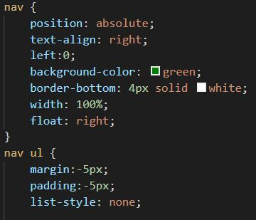

- About Me:

- Name:
- Matthew Scully
- Area Of Study:
- BSc Computing (Web Technology & Security)
Site Report
Introduction
Welcome to my site report, on this page is a report icluding my overall experience learning the basics of web development, including my ups and downs with coding and designing.I will be sharing a short round up my experience while creating this website and also my desing process and the reasons and explanations behind the desgin desicions.
Experience of Learning
I have done quite a bit of web development before while in college but it was in a group project so this website was my first experience creating, desiging and coding a website solo. Before starting this assignment I decided to wait and learn a lot of the basic web delopment skills before starting the development by completing small tasks trying to learn to impliment the knowledge I have before starting this project. I wanted to refresh and relearn a lot of the elements I already knew and made sure I had all the basics down before starting the assignment itself. Like previously mentioned I have covered a lot of the basics before in college but that was a while ago and I had forgotten a lot more then I thought. So it was a very slow process to get used to it all again and I started by reminding myself of all the tags liek "nav" and "ul etc. So I created short little tasks without any css invloved just to familiarise myself with every once again. Overall this worked really well as I got to clarify in my head the basic funtions of everything I was learning before really putting them into practice and over complicating it with the css.
I found learning all of the basics quite easy with a bit of practice but Github is something I have never used before, I had heard of it but never used it even at college so this was a big learning curve for me. Before learning about this like I'm sure a lot of people do, I would just save my file and refresh my broswer to see progress in my code and to keep track of what I'm doing and this obviously caused me some problems even with the little tasks I was doing as I had to rely on undoing lines of code and literally trying to guess how many times I needed to undo to get back to my working code if I messed anything up when I hit save. As mentioned this was a huge learning curve as I needed to fully learn how to use git and Github with no prior knowledge what so ever. But once I learned how to set my account up it made everything a lot simpler and allowed me to organise everything a lot better. A massive negative though is I only started using Github half way through my development of this sit so I missed out on a lot of commits which would have been very helpful when creating and setting up the first few pages.
As I always do I started the design process when I found out what needed to be made and I looked at the desing brief and using a pencil and paper designed each page to get an overall layout and I idea I wanted and also listed the colour and backgound ideas I had. I created a very consistant layout through out the pages as I knew this is what I am going to be trying to code first so I can then put it into all of my pages for the layout to be through the entire website, Also the layout would use a grid layout which is also going to be very useful to put on every page to make it organised and look a lot better then if every page looked different and had a different grid layout. I would that would make it extremely confusing so have the layout consistant was a huge thing for me and it made the whole experience a lot easier and smoother.
Having the lectures recorded was a massive help as I felt I could go back and watch them whenever needed and repeat that as much as needed. Also everything was very well labbeled so I while attempting the things I had learned I didn't get a specific bit I could go back and find it with no problem and make sure I understood it. This made the learning experience a lot better as I learn a lot easier by doing the tasks rather then listening so the fact I could have the lecture side by side with my own attemtp to impliment what I was learning made the experience very smooth.
Ups
I like to feel like the whole learning process was mainly ups as I did everything quite slow and in the correct order and tryed to try to my design as much as possible, each week I would learna new skill and then instantly try and impliment it to make sure I understood it before moving on. I felt because of a small amount of previous knowledge the overall code learning process was a big up becasue I already had a good idea of what everything I was learning was I just needed to refresh my mind and put it into practice. My development experience started extremly well as I created a grid layout like in my design and that really set the overall tone of the website and made it so simple to impliment everything I wanted to do inside the layout, I then simply copied over the code of the layout changing a few navigation names so every page was reachable and straight away and a template, layout and appearance of every page in the assignment. I got the hang of grids quite well which allowed me to create an organised layout but also allowed bme to experiment a bit, I came to make my portfolio page or at least made a conept of what I wanted, the brief said it needs to have images that act as placeholders for images of future work and I instantly thought I could use a grid to create a more visually appealing portfolio father then just a list of images I could create a more complex grid which allowed me to make a bunch of images all different shapes and fit on the page how I want them which turned out great. Another up which I am very happy with while creating this assignment and developing is the desktop "Menu" I knew I had to create a ham burger menu for the mobile version of this website but I wanted to have some sort of transition included in the desktop version and the "menu" works great. Learning to do transitions was straight forward it was just a bit of trial and error with the appearance and placement.
Downs
Unfortunately there was quite a few downs while developing the website as trying to stick to my designs also a big down was when learning Github and getting to grips with it as this wasted a lot of time because of how long it took me to understand. I made a huge mistake during the whole process as previously mentioned, I did not start using git and dommits etc till a long way through the entire development process which made it extremely difficult to back strack on mistakes and made everything I was doing a lot harder, Is also meant it was a hard to track my progress as I did not upload the project to Github till a long way through as well. This proved to be a big down but is a very important lesson I will learn and imporove on through future deleopment on this assignment and future projects. Also originally trying to creat the "nav" code was difficult as I made the mistake of using "div class = nav" rather then the "nav" tag itself wchihc created a lot of problems when creating my naviagtion bar and header but once that was fixed it made the layout process a lot better.
Another aspect I really struggled with in the development process was the order of certain tags, for example "div" tags. A lot of problems that arrose was because mmy tags where in the wrong order or by mistake I had put something that needed to be included in the grid layout outside of the area in needed to be and for a long time that was a huge learning curve as I would look at my code and see nothing wrong but the page would go from looking perfect to all over the place in one save, this obviously wasn' helped by me having no previous versions because of not using git till half way through as previously mentioned.
Development
In this section of the report I will be walking through and exmplaining each step of my development process while creating this website, I will talk through each step in order of completion and examplining my code and the reasoning behind it and the decisions I have made, I will be addressing the appearance and functionality development.
Overall Layout and Appearance
The first aspect I thought of when developing this website was colour, font and layout. I knew I wanted a simple and consistant layout thoughout the entire website as I feel this improves the overall look and amkes the website extremly easy to understand and navigate through. I chose to go with quite dark colours in black and green, I chose these colours because I had the contrast of the text in mind. I wanted a dark but bold colour for the header, sidebar and footer of the website to act almost as a border to the main part of the page which is in the middle, I made all of the font on the page simplistic as well and kept it all white in colour. I did this because the white text would really stand out and have a great contrast with the overall darkness of the page, This meant that anything of importance on the page like the main test, the title and the naviagtion etc really stood out for the user to read. I used simplistic font as I didn't know at the start the size of the font I wanted and I knew this website was being viewed on a mobile as well so I wanted the font to be very easy to read not matter what size it is. This is why I chose a very thin font becausse font with thick letters may be hard to read on smaller devices.
As mentioned I used green for the overall main colour of the page to act like a border for the main text, I also added 2px white borders to all of the green spects to again make them stand out and also further create a border for the main purpose of the page. I decided to do this to make almost a window affect of the sidebar, header and footer to create a window for the main body.

I then decided to add a background Image, I made this decision because having a main basic colour looked to simple when I added in to the main body of the website and I wanted to have the image give the page a bit of texture which will then also as previously mentioned make the text stand out more so again I went with a very dark image with some texture
I then thought about the actual layout of the page now I have figured out the desing and colours, I decided I wanted to make the pages grid layout with a header, sidebar and footer to create that window affect I was talking about. This would allow me to add a fixed header which would include a nice simple title and some form of naviagtion. The sidebar was going to be a nice touch to include some of my personal details which remained the same through out every page as almost like a constant "about me" section
Developing Layout
Now I knew the appearance of my wesbite I began to develop the layout for the index.html page as I knew this would be almost identical through out all the pages so develping this first would then make it easier as the other pages would already have the layout done and would look great together as a whole. So I first created the pages and added the simple lines of html at the top to set up the start of the page, this included linking to the stylesheet for the css of the pages.

I then started with the development of my "nav" which was going to be my header bar and navigation method. On the index page I didn't want to have a menu for the navigation I just wanted it to have multiple options on the header to show the user straight away what the website will contain. So in html I added a "nav" tag and inside it put a list containing all the titles of the different pages and created a "href" for all the pages so the website had a navigation method. As a base this created an orderly list of the other pages that had the links to each one, but I didnt want these to appear as a list as I wanted them to be side my side and have no bullet points so It wouldnt look like a list at all but would still be linked to the pages and still be in order. To do this I added a few lines of css linking to the nav as a whole to first of all change their appearance to fit the website colours as previously mentioned but also added a "float: right;" line to make them go the opposite side of the header to the title. I also like I mentioned didn't want them to appear as a list so I got rid of the list styling completely.
A lot of websites set out a navigation bar like this so I took a lot of inpriation, websites such as amazon have a bar with a lot of naviagtions leading all over the wesbite like this
All of this was added into a "div class" called "grid" this was so I could then add the next part which is the side bar and then later on design the grid so the pieces fall into place, So I then created the sidebar class and placed it into the bigger "grid" class so I could use css to layout the header and the sidebar how I wanted too.